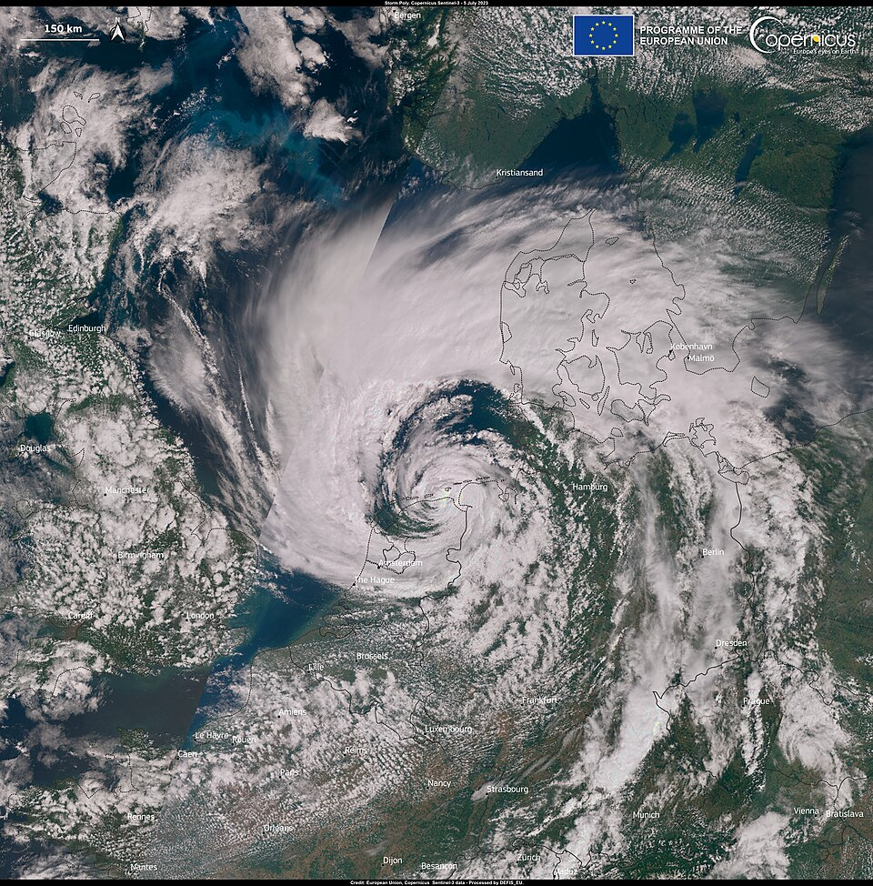

D1 · Story Frame
Core Claim: While annual total precipitation at JFK International Airport fluctuated moderately between 2020 and 2026, the frequency and severity of extreme single-day rainfall events (exceeding 2.0 inches) increased, culminating in record-breaking single-day flooding events that disrupted regional transit systems.
Methods & Data Source: Daily weather summary data retrieved from the National Oceanic and Atmospheric Administration (NOAA) National Centers for Environmental Information (NCEI) Climate Data Online (CDO) service. Dataset: Global Historical Climatology Network Daily (GHCN-Daily), Station USW00094789 (JFK International Airport, NY US). Daily totals (PRCP) were aggregated into annual totals, high-precipitation day counts, and single-day peak metrics.
D2 · Editorial Figures

D3 · Accessible Data Table
| Year | Total Precip (in) | Max Single-Day Event (in) | Days with Precip (≥ 0.01 in) | Heavy Rain Days (≥ 1.0 in) |
|---|---|---|---|---|
| 2020 | 44.12 | 2.14 | 118 | 11 |
| 2021 | 52.30 | 3.84 | 125 | 14 |
| 2022 | 41.85 | 2.01 | 112 | 9 |
| 2023 | 54.60 | 8.05 | 129 | 15 |
| 2024 | 48.20 | 2.92 | 120 | 12 |
| 2025 | 45.75 | 2.45 | 116 | 10 |
Source: NOAA Climate Data Online (GHCN-Daily Station USW00094789).
JFK Extreme Rainfall Record
D5-D6 · System and Documentation
Extend Module 1 patterns, then link your sources, asset credits/licenses, test record, transformation notes, and AI disclosure.